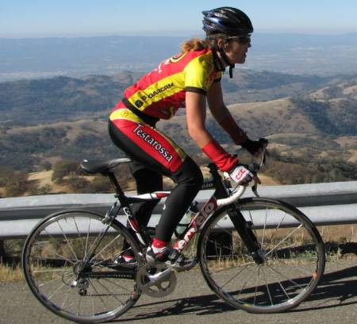

Week 9 Results: Mt Hamilton
22 Nov 2007
|
2007 Low-Key Hillclimbs Week 9 Results: Mt Hamilton 22 Nov 2007 |
|  |
| Lucia Mokres is the first women to the Hamilton summit (Ron Brunner) |
Thanksgiving day, and four-time Low-Key overall men's champion Tracy Colwell emerged from his high-altitude training camp in remote Mexico to return, for the first time, to this year's series. Meanwhile, 2007 champion Tim Clark, afflicted with a cold, preferred volunteer duties this week to rigors of Hamilton's slopes. Without Tim's characteristic sprint from the first beep of the Low-Key car horn, today honked by Low-Key co-founder Kevin Winterfield, visiting for the holiday from his IBM-induced exile in Connecticut, the pace at the start was amazingly congenial. This didn't last too long, though, as Tracy upped the tempo, not to Tim's usual leg-breaking pace, but to one which your humble reporter nevertheless found too anaerobic for the first thousand of over four thousand vertical feet. Indeed, Hamilton is a climb of attrition, not one, but three Low-Key-compliant climbs in one fun package, a delicate rationing of effort.
At the head of the field, Tracy and Low-Key newbie Jesus Aguirre of Superior were able to separate themselves from the huddled masses, and traded the lead throughout the long climb. Finally, experience paid off: exploiting his superior drafting skills on the windswept upper slopes, Tracy was able to drop the oh-so-impressive Jesus, finishing close to a minute and a half ahead of his winning time from 2006. But Jesus will be winning races soon, of that all in attendance were sure.
In the women's field, it was Lucia Mokres who was at the head of the field today, finishing Hamilton in an impressive 0:00, a stunning 13 minutes faster than Anny Henry's winning time from 2006, 14 minutes faster than Charlotte Jacobson in 1996, and even 4 minutes faster than the legendary Seana Hogan in 1995. Still, it wasn't enough for the overall win, as Janet Martinez finished less than 2.5 minutes back, to hold onto her top spot on the podium. Any other year, and Janet would have been tops on the day, as well.
In the Hybrid-Electric division, more than one participant throught series super-leader Bill Bushnell finally had some competition, due to the piston-like growl emitted by the bike of one of the Google riders. But alas, it was just a card taped to his seat-stay, vibrating in his spokes... With a combination of high power-to-mass and exceptional efficiency in the Hamilton winds, Bill blitzed the climb in 61:22, an average speed of 18.0 mph.
But it was the team competition which was the real story, as brave Bike Trip was JUST unable to hold off the mega-team Webcor/Alto Velo. Still, the winner for the day was San Jose Bike Club, enjoying its home-field advantage, taking the third spot in the overall team podium.
Finally, in the Endurance competition, Pat Parseghian took the big win. Not at all a slow climber, completing Hamilton in a solid 2 hours and 15 miniutes, Pat won the competition with her excellent attendance. Nice job, Pat! She suffered out there more than anyone else.
Thanks to coordinator Kevin Winterfield, with help from Ron Brunner, Fred Butts, Tim Clark, Penny Hutchinson, Kelly Kasik, Luisa "Lulu" Kelly, Leo Menestrina, and Amy Tan for making today's climb possible!median time = 61:22
pl # rider team category time mph fph score 1 244 Bill Bushnell TNT Hybrid 61:22 17.99 4246 100.00
median time = 92:18
pl # rider team category time mph fph score 1 51 Tracy Colwell Team Colwell 2 73:26 15.03 3549 125.69 2 304 Jesus Aguirre Superior 73:45 14.97 3533 125.15 3 410 Yuval Rachmilevitz 35+ 75:03 14.71 3472 122.98 4 364 Chris Isley Webcor/Alto Velo 4 75:20 14.65 3459 122.52 5 39 Clark Foy San Jose Bike Club 40+ 75:39 14.59 3445 122.01 6 54 Justin Lucke Google Vegan 77:32 14.24 3361 119.05 7 217 Thomas Novikoff Cambio 2 79:35 13.87 3274 115.98 8 328 Mark Edwards Bike Trip 45+ 79:39 13.86 3272 115.88 9 81 Ramon Alarcon San Jose Bike Club 35+ 79:45 13.84 3267 115.74 10 17 Brian Edwards Hell Riders 25-29 79:50 13.83 3264 115.62 11 1 Dan Connelly TNT 3 79:54 13.82 3261 115.52 12 97 Greg McQuaid Western Wheelers 35+ 80:18 13.75 3245 114.94 13 379 Bo Habenstreit Webcor/Alto Velo 3 80:30 13.71 3237 114.66 14 385 Todd Studenicke San Jose Bike Club 81:01 13.63 3216 113.93 15 124 Jeff Farnsworth San Jose Bike Club 50+ 81:55 13.48 3181 112.68 16 213 Tom Gardin 35+ 82:11 13.43 3171 112.31 17 142 Rich Hill LGBRC 40+ 82:12 13.43 3170 112.29 18 20 James Porter Western Wheelers Out Of Shape Dads 82:50 13.33 3146 111.43 19 391 Billy Crane Webcor/Alto Velo 4 82:55 13.31 3143 111.32 20 334 Greg Moore Catellus Masters 83:05 13.29 3136 111.09 21 158 Charles Pockell-Wilson Equipe Mod Classique 40+ 83:38 13.20 3116 110.36 22 425 Tully Cashman 4 84:01 13.14 3102 109.86 23 323 Scott Martin Bike Trip 50+ 84:30 13.07 3084 109.23 24 67 Martin Hyland Western Wheelers 50+ 84:32 13.06 3083 109.19 25 335 Jim Langley Bike Trip 50+ 84:32 13.06 3083 109.19 26 322 Christopher Bosch Google 5 Wannabee 84:39 13.04 3078 109.04 27 284 John Walker Google 40+ 84:45 13.03 3075 108.91 28 318 Jeff Botelho TFSF 45+ 84:54 13.00 3069 108.72 29 277 DJ Novotney 30+ 84:59 12.99 3066 108.61 30 166 Todd Manley San Jose Bike Club 6'9" 85:05 12.98 3063 108.48 31 48 David Kelly Webcor/Alto Velo 30+ 85:24 12.93 3051 108.08 32 369 Ernest Schimmerling PMVC 40+ 86:09 12.81 3025 107.14 33 221 Jenson Lee Kahala La Grange 2 86:50 12.71 3001 106.30 34 368 Tim Sullivan 40+ 88:10 12.52 2956 104.69 35 250 Ian Sowden 88:15 12.51 2953 104.59 36 239 Joerg Heilig Google 35+ 88:20 12.50 2950 104.49 37 413 David Quincy 45+ 88:23 12.49 2948 104.43 38 88 Peter Tapscott AV: Old Guys Finish 50+ 88:27 12.48 2946 104.35 39 417 Peter Cazalet Webcor/Alto Velo 88:43 12.44 2937 104.04 40 377 Edward Webh San Jose Bike Club 45+ 88:55 12.42 2931 103.81 41 271 John Toor 45+ 89:11 12.38 2922 103.49 42 344 Harvey Wong Friends of Janet 35+ 89:12 12.38 2921 103.48 43 416 David Womer Super Mid-Life Crisis 89:20 12.36 2917 103.32 44 363 Ricky Lucero San Jose Bike Club 89:29 12.34 2912 103.15 45 443 Miles Cowherd 40+ 90:14 12.23 2888 102.29 46 400 Lucas Pereira Google 5 90:20 12.22 2885 102.18 47 381 David Farinha San Jose Bike Club Junior 90:34 12.19 2877 101.91 48 375 Phil Alne LGBRC 4 91:04 12.12 2861 101.35 49 295 Brian Schmitz Friends of Janet 4 91:13 12.10 2857 101.19 50 122 Michael Gonia Republic of Anaerobia 40+ 91:22 12.08 2852 101.02 51 283 Dan Talayco Two Wheel Tango 40+ 91:59 12.00 2833 100.34 52 395 Robert Orontt 5 92:06 11.99 2829 100.22 53 264 Luke Burton LGBRC 5 92:14 11.97 2825 100.07 54 4 Fred E. Stamm Pen Velo/Kondra 55+ 92:18 11.96 2823 100.00 55 307 Christian Paquet Doogie 50+ 92:22 11.95 2821 99.93 56 6 Greg Dougald AV: Old Guys Finish 45+ 92:44 11.91 2810 99.53 57 350 Jacob Rodak 20-24 93:22 11.82 2791 98.86 58 265 Steven Woo LGBRC 4 93:25 11.82 2789 98.80 59 222 Mike Salamen 50+ 93:35 11.80 2784 98.63 60 383 Mark Hlady Independent 93:43 11.78 2781 98.49 61 156 Eric Murray Webcor/Alto Velo 45+ 95:06 11.61 2740 97.06 62 331 Rob Boyer LGBRC 50+ 95:25 11.57 2731 96.73 63 347 Michael Kirkpatrick SRI 4 95:52 11.52 2718 96.28 64 135 Larry Munoz Republic of Anaerobia 45+ 95:55 11.51 2717 96.23 65 419 Akin Dirik Webcor/Alto Velo 40+ 96:30 11.44 2700 95.65 66 343 Matt Werner Bike Trip 45+ 96:50 11.40 2691 95.32 67 273 Calvin Do Skinny slow guys 35+ 96:55 11.39 2689 95.24 68 376 Robert Ballard Grizzly Peak Cyclists 97:00 11.38 2686 95.15 69 409 Alan Weatherall San Jose Bike Club 45+ 97:15 11.35 2679 94.91 70 346 Joe Farinha San Jose Bike Club 45+ 97:20 11.34 2677 94.83 71 359 James Keller 98:05 11.26 2657 94.10 72 172 Robert Werner Webcor/Alto Velo 30+ 98:50 11.17 2637 93.39 73 9 Ken Straub Team Bikeaholics Older Than You 99:02 11.15 2631 93.20 74 212 Pete Jollymour 6 100:01 11.04 2605 92.28 75 353 Hans de Roos GDI Dutch 100:06 11.03 2603 92.21 76 255 John Franklin Old School 35+ 100:12 11.02 2601 92.12 77 149 Steve Sprang Apple 30+ 100:40 10.97 2589 91.69 78 259 Joshua Hadley Republic of Anaerobia 101:54 10.83 2557 90.58 79 21 Pete Heller AV: Old Guys Finish 50+ 101:56 10.83 2556 90.55 80 399 Eric Powell 102:05 10.81 2553 90.42 81 64 Keith Devlin Western Wheelers 60+ 102:41 10.75 2538 89.89 82 365 Gino Cetani Chain Reaction Sick 103:10 10.70 2526 89.47 83 372 Ryan P.C. Gibson Google 103:42 10.65 2513 89.01 84 338 Mark King Fremont Freewheelers 4 104:04 10.61 2504 88.69 85 201 Vinay Ravuri Georgia Tech Beginner 105:06 10.50 2479 87.82 86 434 Mike Reed Western Wheelers 45+ 105:36 10.45 2468 87.41 87 436 Matt Batz San Jose Bike Club 4 105:44 10.44 2465 87.30 88 276 Genti Cuni Climbing Turtles 106:12 10.40 2454 86.91 89 321 Geoff Patterson 106:22 10.38 2450 86.78 90 333 Cris Maltzman 45+ 109:46 10.06 2374 84.09 91 225 Bogdan Florea 35+ 110:26 10.00 2360 83.58 92 428 Jan Berka 45+ 111:25 9.91 2339 82.84 93 405 Aaron Thomas 112:07 9.85 2324 82.32 94 177 Dan Stober Western Wheelers 55+ 113:00 9.77 2306 81.68 95 408 Richard Contreras 113:09 9.76 2303 81.57 96 49 Adam Tow Blubber Busters Infinity 113:59 9.69 2286 80.98 97 401 David Hanel 35+ 115:04 9.59 2265 80.21 98 342 Jim Wholey 60+ 119:32 9.24 2180 77.22 99 300 Wade Bastien 35+ 121:14 9.11 2149 76.13 100 164 David Knight San Jose Bike Club Fat And Slow 121:39 9.08 2142 75.87 101 254 Richard Allen Webcor/Alto Velo 55+ 121:40 9.07 2142 75.86 102 393 Mike Guitterrez 126:49 8.71 2055 72.78 103 437 Carlos Perez Trappist 37+ 127:40 8.65 2041 72.30 104 41 Chris Boardman The Cutters 5 127:45 8.64 2040 72.25 105 406 Gento Kusano San Jose Bike Club Junior 127:55 8.63 2037 72.16 106 132 Joseph Maurer RUSA 60+ 128:55 8.56 2021 71.60 107 355 Martin Brandt 145:01 7.61 1797 63.65
median time = 116:56
pl # rider team category time mph fph score 1 270 Lucia Mokres LGBRC 4 88:45 12.44 2936 131.76 2 240 Janet Martinez Friends of Janet 40+ 91:11 12.11 2858 128.24 3 332 Margie Biddick Bike Trip 4 97:06 11.37 2684 120.43 4 154 Anny Henry CRC 3 99:37 11.08 2616 117.38 5 252 Irene Franklin Old School 30+ 100:12 11.02 2601 116.70 6 373 Melanie Dominguez Bike Trip Dirt Woman 106:02 10.41 2458 110.28 7 422 Connie Jaremczuk Western Wheelers 4 106:26 10.37 2448 109.87 8 260 Mary Ellen Allen Webcor/Alto Velo 55+ 113:16 9.75 2301 103.24 9 357 Lorri Lee Lown Velogirls 40+ 116:56 9.44 2228 100.00 10 440 Kris Cowherd 40+ 118:30 9.32 2199 98.68 11 281 Cara Coburn TNT 40+ 123:45 8.92 2106 94.49 12 305 Anne Findlay JDRF 30+ 126:10 8.75 2065 92.68 13 71 Marie Borselle Velogirls 40+ 129:40 8.51 2010 90.18 14 111 Pat Parseghian Google 50+ 135:24 8.15 1925 86.36 15 279 Nuria Bertran Climbing Turtles Beginner 136:36 8.08 1908 85.60 16 361 Dana Freedman Velogirls Slow 137:22 8.04 1897 85.12 17 367 Sarah Elson TNT 148:00 7.46 1761 79.01
pl team score scoring 1 San Jose Bike Club 351.67 (Clark Foy, Ramon Alarcon, Todd Studenicke) 2 Webcor/Alto Velo 348.50 (Chris Isley, Bo Habenstreit, Billy Crane) 3 Bike Trip 346.59 (Margie Biddick, Mark Edwards, Melanie Dominguez) 4 LGBRC 345.40 (Lucia Mokres, Rich Hill, Phil Alne) 5 Google 336.99 (Justin Lucke, Christopher Bosch, John Walker) 6 Western Wheelers 336.24 (Greg McQuaid, James Porter, Connie Jaremczuk) 7 Friends of Janet 332.90 (Janet Martinez, Harvey Wong, Brian Schmitz) 8 TNT 310.01 (Dan Connelly, Bill Bushnell, Cara Coburn) 9 AV: Old Guys Finish 294.43 (Peter Tapscott, Greg Dougald, Pete Heller) 10 Republic of Anaerobia 287.83 (Michael Gonia, Larry Munoz, Joshua Hadley) 11 Velogirls 275.30 (Lorri Lee Lown, Marie Borselle, Dana Freedman) 12 Old School 208.82 (Irene Franklin, John Franklin) 13 Climbing Turtles 172.51 (Genti Cuni, Nuria Bertran) 14 Team Colwell 125.69 (Tracy Colwell) 15 Superior 125.15 (Jesus Aguirre) 16 CRC 117.38 (Anny Henry) 17 Cambio 115.98 (Thomas Novikoff) 18 Hell Riders 115.62 (Brian Edwards) 19 Catellus 111.09 (Greg Moore) 20 Equipe Mod Classique 110.36 (Charles Pockell-Wilson) 21 TFSF 108.72 (Jeff Botelho) 22 PMVC 107.14 (Ernest Schimmerling) 23 Kahala La Grange 106.30 (Jenson Lee) 24 Two Wheel Tango 100.34 (Dan Talayco) 25 Pen Velo/Kondra 100.00 (Fred E. Stamm) 26 Doogie 99.93 (Christian Paquet) 27 Independent 98.49 (Mark Hlady) 28 SRI 96.28 (Michael Kirkpatrick) 29 Skinny slow guys 95.24 (Calvin Do) 30 Grizzly Peak Cyclists 95.15 (Robert Ballard) 31 Team Bikeaholics 93.20 (Ken Straub) 32 JDRF 92.68 (Anne Findlay) 33 GDI 92.21 (Hans de Roos) 34 Apple 91.69 (Steve Sprang) 35 Chain Reaction 89.47 (Gino Cetani) 36 Fremont Freewheelers 88.69 (Mark King) 37 Georgia Tech 87.82 (Vinay Ravuri) 38 Blubber Busters 80.98 (Adam Tow) 39 Trappist 72.30 (Carlos Perez) 40 The Cutters 72.25 (Chris Boardman) 41 RUSA 71.60 (Joseph Maurer)